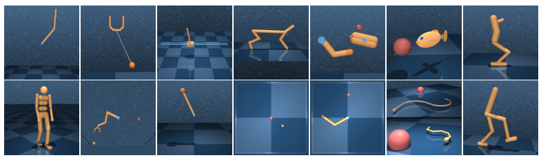

dmc2gym¶
概述¶
dmc2gym 是针对DeepMind Control Suite的轻量级wrapper，提供标准的 OpenAI Gym 接口。 DeepMind Control Suite 是一组具有标准化结构和可解释奖励的连续控制任务，旨在作为强化学习agent的性能基准。
安装¶
安装方法¶
需要安装 gym， dm_control和 dmc2gym , 用户可以选择通过下列 pip 命令一键安装。（注意 dm_control 如果存在问题请参考官方的相关说明）
注：如果要把相应的包安装到用户目录（例如用户没有 root 权限，需将相应的包安装到用户目录），请在 install 的命令后面加上 --user。
# Install Directly
pip install gym
pip install dm_control
pip install git+git://github.com/denisyarats/dmc2gym.git
验证安装¶
安装完成后，可以通过在 Python 命令行中运行如下命令验证安装成功：
import dmc2gym
env = dmc2gym.make(domain_name='point_mass', task_name='easy', seed=1)
obs = env.reset()
print(obs.shape) # (4,)
镜像¶
DI-engine 的镜像配备有框架本身和 dmc2gym 环境，可通过docker pull opendilab/ding:nightly-dmc2gym获取，或访问docker hub获取更多镜像
环境介绍¶
选择任务¶
dm_control 包含多个domain （即物理模型），而不同domain有不同的task（具有特定 MDP 结构的模型的实例）。我们这里暂时实现了如下 domain 及其 task ：
Ball in cup
平面球杯任务。一个被驱动的平面容器可以在垂直平面上平移，以便摆动并接住一个连接在其底部的球。当球在杯子里时，接球任务的奖励为 1，否则为 0。
catch
Cart-pole
符合 Barto等人1983年提出的物理模型。通过在其底部向推车施加力来摆动并平衡未驱动的杆。本环境实现了如下任务
balance: 初始杆靠近立柱
swingup: 初始杆指向下方
Cheetah

平面奔跑的两足动物，基于 Wawrzyński等人2009年提出的模型，奖励
r与前向速度v成线性关系，最大为 10m/s，即r(v) = max(0, min(v/10, 1))。run
Finger
基于 Tassa等人2010年提出模型的 3 自由度玩具操纵问题。 平面上用一个“手指”在无其他驱动力的铰链上旋转物体，使得物体的尖端与目标重叠。
spin: 在此任务中，物体必须不断地旋转。
Reacher
目标位置随机的简单两连杆平面伸展器。 在杆末端穿透目标球体时奖励为1。
easy: 目标球体比在困难任务中更大.
Walker
基于 Lillicrap等人2015年提出模型的改进的平面步行器。 walk 任务包含一个组件激励快速前进。
walk
{kind=link}
{kind=link}
{kind=link}
{kind=link}
{kind=link}
通过设置参数domain_name,task_name进行调用：
例如
env = DMC2GymEnv(EasyDict({
"domain_name": "cartpole",
"task_name": "balance",
}))
相应的状态空间、动作空间、观察空间
(dim(S), dim(A), dim(O))如下表所示：
Domain |
Task |
dim(S) |
dim(A) |
dim(O) |
|---|---|---|---|---|
ball in cup |
catch |
8 |
2 |
8 |
cart-pole |
balance |
4 |
1 |
5 |
swingup |
4 |
1 |
5 |
|
cheetah |
run |
18 |
6 |
17 |
finger |
spin |
6 |
2 |
12 |
reacher |
easy |
4 |
2 |
7 |
walker |
walk |
18 |
6 |
24 |
Note
dm_control 中的 task 均遵循马尔可夫决策过程( MDP )。
状态
s除空间方向外是一个实数向量 \(\cal{S} \equiv \mathbb{R}^{dim(\cal{S})}\) ，其中空间方向由单位四元数 \(\in SU(2)\) 表示。观察
o(s, a)描述了 agent 可获取的观察结果。我们实现的 task 均为强可观测的，即可以从单个观察中复原状态。仅取决于状态（位置和速度）的观测特征是当前状态的函数。也依赖于控件（例如触摸传感器读数）的观测特征是之前transition的函数。
观察空间¶
基于图像观察¶
即当设置
from_pixels=True时，观察空间为三通道，长宽分别为height, width的游戏图像可以通过设置
height, width参数调整所观察图像尺寸。通过设置
channels_first来决定观察空间的具体shapechannels_first=True观察空间shape为[3, height, width]channels_first=False，观察空间shape为[height, width, 3]
每个channel的单个像素值范围为
[0, 255]， 数据类型为uint8
非基于图像观察¶
即当设置
from_pixels=False时，观察空间维度遵循上述表格的中dim(O)默认范围为
[-inf, inf]
动作空间¶
动作空间维度遵循上述表格的中
dim(A)dmc2gym 对动作空间进行了标准化，每个维度动作空间的范围是
[-1, 1]，类型为float32。
奖励空间¶
基于图像观察¶
与
frame_skip参数有关，即表示每一步基于frame_skip帧的图像，维度为(1,)范围为
[0, frame_skip]，类型为float32，默认frame_skip = 1即每帧画面的奖励空间为
[0, 1]，将frame_skip帧的 reward 叠加在一起作为整体的 reward
非基于图像观察¶
维度为
(1, )，范围[0, 1]，类型为float32
其他¶
中止条件¶
控制任务分为 finite-horizon, firstexit 以及 infinite-horizon ， DeepMind Control Suite 属于 infinite-horizon ，所以任务没有中止状态或时间限制。
惰性初始化¶
为了便于支持环境向量化等并行操作，环境实例一般实现惰性初始化，即__init__方法不初始化真正的原始环境实例，只是设置相关参数和配置值，在第一次调用reset方法时初始化具体的原始环境实例。
随机种子¶
环境中有两部分随机种子需要设置，一是原始环境的随机种子，二是各种环境变换使用到的随机库的随机种子（例如
random，np.random）对于环境调用者，只需通过环境的
seed方法进行设置这两个种子，无需关心具体实现细节环境内部的具体实现：对于原始环境的种子，在调用环境的
reset方法内部，具体的原始环境reset之前设置环境内部的具体实现：对于随机库种子，则在环境的
seed方法中直接设置该值; 对于原始环境的种子，在调用环境的reset方法内部，具体的原始环境reset之前设置为seed + np_seed, 其中seed为前述的随机库种子的值, np_seed = 100 * np.random.randint(1, 1000)。
存储录像¶
在环境创建之后，重置之前，调用enable_save_replay方法，指定游戏录像保存的路径。环境会在每个episode结束之后自动保存本局的录像文件。（默认调用gym.wrappers.RecordVideo实现 ），下面所示的代码将运行一个环境episode，并将这个episode的结果保存在./video/中：
from easydict import EasyDict
from dizoo.dmc2gym.envs import DMC2GymEnv
env = DMC2GymEnv(EasyDict({
"domain_name": "cartpole",
"task_name": "balance",
"frame_skip": 2,
"from_pixels": True,
}))
env.enable_save_replay(replay_path='./video')
env.seed(314, dynamic_seed=False)
obs = env.reset()
while True:
action = env.random_action()
timestep = env.step(action)
if timestep.done:
print('Episode is over, eval episode return is: {}'.format(timestep.info['eval_episode_return']))
break
DI-zoo 可运行代码示例¶
完整的示例文件在 github link 内
from easydict import EasyDict
cartpole_balance_ddpg_config = dict(
exp_name='dmc2gym_cartpole_balance_ddpg_eval',
env=dict(
env_id='dmc2gym_cartpole_balance',
domain_name='cartpole',
task_name='balance',
from_pixels=False,
norm_obs=dict(use_norm=False, ),
norm_reward=dict(use_norm=False, ),
collector_env_num=1,
evaluator_env_num=8,
use_act_scale=True,
n_evaluator_episode=8,
replay_path='./dmc2gym_cartpole_balance_ddpg_eval/video',
stop_value=1000,
),
policy=dict(
cuda=True,
random_collect_size=2560,
load_path="./dmc2gym_cartpole_balance_ddpg/ckpt/iteration_10000.pth.tar",
model=dict(
obs_shape=5,
action_shape=1,
twin_critic=False,
actor_head_hidden_size=128,
critic_head_hidden_size=128,
action_space='regression',
),
learn=dict(
update_per_collect=1,
batch_size=128,
learning_rate_actor=1e-3,
learning_rate_critic=1e-3,
ignore_done=False,
target_theta=0.005,
discount_factor=0.99,
actor_update_freq=1,
noise=False,
),
collect=dict(
n_sample=1,
unroll_len=1,
noise_sigma=0.1,
),
other=dict(replay_buffer=dict(replay_buffer_size=10000, ), ),
)
)
cartpole_balance_ddpg_config = EasyDict(cartpole_balance_ddpg_config)
main_config = cartpole_balance_ddpg_config
cartpole_balance_create_config = dict(
env=dict(
type='dmc2gym',
import_names=['dizoo.dmc2gym.envs.dmc2gym_env'],
),
env_manager=dict(type='base'),
policy=dict(
type='ddpg',
import_names=['ding.policy.ddpg'],
),
replay_buffer=dict(type='naive', ),
)
cartpole_balance_create_config = EasyDict(cartpole_balance_create_config)
create_config = cartpole_balance_create_config